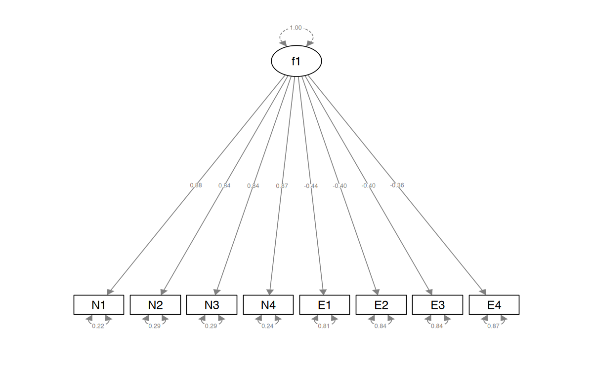
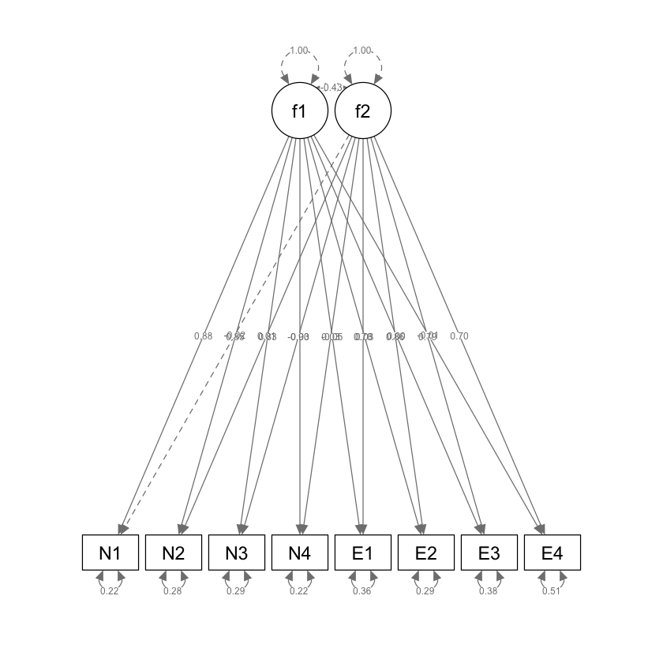

here::here("code", "_common.R") |>
source()
# Load packages
if (!requireNamespace("pacman")) install.packages("pacman")
pacman::p_load(lavaan, psych, BifactorIndicesCalculator, semPlot, semTools)40 Exploratory Structural Equation Modeling (ESEM)
L’Exploratory Structural Equation Modeling (ESEM) è un framework analitico che integra i modelli di misurazione dell’Analisi Fattoriale Esplorativa (EFA) con il più strutturato approccio della Confirmatory Factor Analysis (CFA). Questa integrazione permette di godere dei benefici tipici della CFA, come la specificità e la rigore, pur mantenendo la flessibilità dell’EFA, che considera le saturazioni incrociate tra i fattori.
Inoltre, lo sviluppo della rotazione target nell’ESEM facilita la definizione a priori dei principali carichi fattoriali, mentre consente che i carichi incrociati rimangano il più possibile vicini a zero, ma siano stimati in maniera libera. Questa tecnica di rotazione consente di applicare il modello in modo confermativo, basandosi su una struttura fattoriale predefinita, pur adottando una flessibilità tipica dell’EFA.
In questo modo, l’ESEM si presta sia a usi confermativi che esplorativi, combinando i vantaggi di entrambi gli approcci — EFA e CFA — in un unico modello comprensivo.
40.1 Limitazioni della CFA
Nel modello di misurazione di Confirmatory Factor Analysis (CFA), comunemente adottato nella ricerca psicologica, solitamente sappiamo quali indicatori appartengono a ciascun fattore latente, una struttura denominata “a priori”. Questo approccio è utilizzato per verificare se la struttura fattoriale presunta corrisponde effettivamente ai dati raccolti.
Tuttavia, nonostante la popolarità della CFA, essa presenta delle limitazioni significative. I modelli CFA spesso risultano eccessivamente semplici e restrittivi, presupponendo “fattori puri”, cioè assumento che ciascun item saturi solamente sui suoi fattori latenti predeterminati, con saturazioni incrociate (ovvero, contributi di un item a fattori non primari) vincolate a zero. Questa restrizione può non riflettere adeguatamente la realtà di molte misure psicologiche, dove gli item tendono a riflettere più di un costrutto. Questo approccio può portare a una rappresentazione artificiale delle relazioni tra gli item e i fattori, risultando in statistiche di adattamento del modello sovrastimate e correlazioni tra fattori positivamente distorte. Studi di simulazione hanno mostrato che anche piccole saturazioni incrociate, se ignorate, possono portare ad una distorsione nelle stime dei parametri.
Un altro problema è rappresentato dagli indici di bontà di adattamento utilizzati nei modelli CFA, che sono spesso troppo restrittivi per strumenti psicologici multifattoriali, rendendo quasi impossibile ottenere un “buon” adattamento senza significative modifiche ai modelli. Tuttavia, quando analizzati a livello di item e per affidabilità, i modelli che non mostrano un buon adattamento possono comunque indicare saturazioni ragionevoli e alti livelli di affidabilità.
In risposta a queste sfide, sono stati sviluppati approcci più flessibili e robusti, come l’Exploratory Structural Equation Modeling (ESEM).
40.2 Exploratory Structural Equation Modeling
L’ESEM combina elementi delle CFA e dell’Exploratory Factor Analysis (EFA) all’interno del tradizionale framework delle Equazioni Strutturali (SEM). Questo approccio rappresenta un compromesso tra la ricerca iterativa di soluzioni fattoriali ottimali, tipica dell’EFA, e la modellazione teorica restrittiva delle CFA.
L’ESEM è essenzialmente un metodo confermativo che permette anche un’esplorazione attraverso l’uso di rotazioni mirate, mantenendo la presenza di caricamenti incrociati, seppur minimizzati. All’interno dell’ESEM, il ricercatore può prevedere a priori una struttura fattoriale, similmente a quanto avviene nelle CFA, ma con una maggiore flessibilità permessa dalla possibilità di modellare saturazioni incrociate.
Nell’ESEM, i fattori generali e specifici devono essere specificati come totalmente indipendenti, e le rotazioni ortogonali sono comuni nei modelli bifattoriali. I metodi di rotazione più usati nell’ESEM includono le rotazioni geomin e target, con rotazioni ortogonali adatte ai modelli più complessi.
Le analisi di simulazione indicano che le correlazioni tra i fattori latenti ottenute con l’ESEM sono generalmente meno distorte e più vicine alle vere associazioni, rendendo i modelli ESEM più coerenti con le teorie sottostanti e le intenzioni degli strumenti psicometrici misurati.
Quando un modello ESEM include solo una parte di misurazione, viene definito come “analisi fattoriale esplorativa” o EFA. Se il modello include anche una parte strutturale, come regressioni tra variabili latenti, è classificato come “modello di equazioni strutturali esplorativo” o ESEM.
40.3 Otto Misure di Personalità
In questo esempio pratico analizzeremo nuovamente i dati di {cite:t}brown2015confirmatory, ovvero otto misure di personalità raccolte su un campione di 250 pazienti che hanno concluso un programma di psicoterapia. Utilizzeremo un’analisi EFA mediante la funzione efa() di lavaan.
Gli item sono i seguenti:
- anxiety (N1),
- hostility (N2),
- depression (N3),
- self-consciousness (N4),
- warmth (E1),
- gregariousness (E2),
- assertiveness (E3),
- positive emotions (E4).
varnames <- c("N1", "N2", "N3", "N4", "E1", "E2", "E3", "E4")
sds <- "5.7 5.6 6.4 5.7 6.0 6.2 5.7 5.6"
cors <- "
1.000
0.767 1.000
0.731 0.709 1.000
0.778 0.738 0.762 1.000
-0.351 -0.302 -0.356 -0.318 1.000
-0.316 -0.280 -0.300 -0.267 0.675 1.000
-0.296 -0.289 -0.297 -0.296 0.634 0.651 1.000
-0.282 -0.254 -0.292 -0.245 0.534 0.593 0.566 1.000"
psychot_cor_mat <- getCov(cors, names = varnames)
n <- 250Definiamo un modello ad un solo fattore comune.
# 1-factor model
f1 <- '
efa("efa")*f1 =~ N1 + N2 + N3 + N4 + E1 + E2 + E3 + E4
'Definiamo un modello con due fattori comuni.
# 2-factor model
f2 <- '
efa("efa")*f1 +
efa("efa")*f2 =~ N1 + N2 + N3 + N4 + E1 + E2 + E3 + E4
'Adattiamo ai dati il modello ad un fattore comune.
efa_f1 <-cfa(
model = f1,
sample.cov = psychot_cor_mat,
sample.nobs = 250,
rotation = "oblimin"
)Esaminiamo la soluzione ottenuta.
semPlot::semPaths(efa_f1,
what = "col",
whatLabels = "std",
style = "mx",
layout = "tree2",
nCharNodes = 7,
shapeMan = "rectangle",
sizeMan = 8,
sizeMan2 = 5
)
summary(
efa_f1,
fit.measures = TRUE,
standardized = TRUE,
rsquare = TRUE
) |>
print()lavaan 0.6-18 ended normally after 2 iterations
Estimator ML
Optimization method NLMINB
Number of model parameters 16
Rotation method OBLIMIN OBLIQUE
Oblimin gamma 0
Rotation algorithm (rstarts) GPA (30)
Standardized metric TRUE
Row weights None
Number of observations 250
Model Test User Model:
Test statistic 375.327
Degrees of freedom 20
P-value (Chi-square) 0.000
Model Test Baseline Model:
Test statistic 1253.791
Degrees of freedom 28
P-value 0.000
User Model versus Baseline Model:
Comparative Fit Index (CFI) 0.710
Tucker-Lewis Index (TLI) 0.594
Loglikelihood and Information Criteria:
Loglikelihood user model (H0) -2394.637
Loglikelihood unrestricted model (H1) -2206.974
Akaike (AIC) 4821.275
Bayesian (BIC) 4877.618
Sample-size adjusted Bayesian (SABIC) 4826.897
Root Mean Square Error of Approximation:
RMSEA 0.267
90 Percent confidence interval - lower 0.243
90 Percent confidence interval - upper 0.291
P-value H_0: RMSEA <= 0.050 0.000
P-value H_0: RMSEA >= 0.080 1.000
Standardized Root Mean Square Residual:
SRMR 0.187
Parameter Estimates:
Standard errors Standard
Information Expected
Information saturated (h1) model Structured
Latent Variables:
Estimate Std.Err z-value P(>|z|) Std.lv Std.all
f1 =~ efa
N1 0.879 0.051 17.333 0.000 0.879 0.880
N2 0.841 0.052 16.154 0.000 0.841 0.842
N3 0.841 0.052 16.175 0.000 0.841 0.843
N4 0.870 0.051 17.065 0.000 0.870 0.872
E1 -0.438 0.062 -7.041 0.000 -0.438 -0.439
E2 -0.398 0.063 -6.327 0.000 -0.398 -0.398
E3 -0.398 0.063 -6.342 0.000 -0.398 -0.399
E4 -0.364 0.063 -5.746 0.000 -0.364 -0.364
Variances:
Estimate Std.Err z-value P(>|z|) Std.lv Std.all
.N1 0.224 0.028 7.915 0.000 0.224 0.225
.N2 0.289 0.033 8.880 0.000 0.289 0.290
.N3 0.288 0.032 8.866 0.000 0.288 0.289
.N4 0.239 0.029 8.174 0.000 0.239 0.240
.E1 0.804 0.073 10.963 0.000 0.804 0.807
.E2 0.838 0.076 11.008 0.000 0.838 0.841
.E3 0.837 0.076 11.007 0.000 0.837 0.841
.E4 0.864 0.078 11.041 0.000 0.864 0.867
f1 1.000 1.000 1.000
R-Square:
Estimate
N1 0.775
N2 0.710
N3 0.711
N4 0.760
E1 0.193
E2 0.159
E3 0.159
E4 0.133
standardizedSolution(efa_f1)| lhs | op | rhs | est.std | se | z | pvalue | ci.lower | ci.upper |
|---|---|---|---|---|---|---|---|---|
| <chr> | <chr> | <chr> | <dbl> | <dbl> | <dbl> | <dbl> | <dbl> | <dbl> |
| f1 | =~ | N1 | 0.8803717 | 0.01823083 | 48.290268 | 0.000000e+00 | 0.8446400 | 0.9161035 |
| f1 | =~ | N2 | 0.8424369 | 0.02181993 | 38.608605 | 0.000000e+00 | 0.7996706 | 0.8852031 |
| f1 | =~ | N3 | 0.8431190 | 0.02175410 | 38.756779 | 0.000000e+00 | 0.8004818 | 0.8857563 |
| f1 | =~ | N4 | 0.8719792 | 0.01900765 | 45.875162 | 0.000000e+00 | 0.8347249 | 0.9092335 |
| f1 | =~ | E1 | -0.4389273 | 0.05365312 | -8.180834 | 2.220446e-16 | -0.5440854 | -0.3337691 |
| f1 | =~ | E2 | -0.3983268 | 0.05578807 | -7.139999 | 9.332535e-13 | -0.5076694 | -0.2889842 |
| f1 | =~ | E3 | -0.3991904 | 0.05574480 | -7.161033 | 8.006928e-13 | -0.5084482 | -0.2899326 |
| f1 | =~ | E4 | -0.3644271 | 0.05741294 | -6.347474 | 2.188791e-10 | -0.4769544 | -0.2518998 |
| N1 | ~~ | N1 | 0.2249456 | 0.03209982 | 7.007691 | 2.422729e-12 | 0.1620311 | 0.2878601 |
| N2 | ~~ | N2 | 0.2903001 | 0.03676382 | 7.896353 | 2.886580e-15 | 0.2182443 | 0.3623559 |
| N3 | ~~ | N3 | 0.2891503 | 0.03668260 | 7.882492 | 3.108624e-15 | 0.2172537 | 0.3610469 |
| N4 | ~~ | N4 | 0.2396523 | 0.03314856 | 7.229643 | 4.842793e-13 | 0.1746823 | 0.3046222 |
| E1 | ~~ | E1 | 0.8073429 | 0.04709963 | 17.141172 | 0.000000e+00 | 0.7150293 | 0.8996564 |
| E2 | ~~ | E2 | 0.8413358 | 0.04444377 | 18.930344 | 0.000000e+00 | 0.7542276 | 0.9284440 |
| E3 | ~~ | E3 | 0.8406470 | 0.04450558 | 18.888577 | 0.000000e+00 | 0.7534177 | 0.9278764 |
| E4 | ~~ | E4 | 0.8671929 | 0.04184566 | 20.723604 | 0.000000e+00 | 0.7851769 | 0.9492089 |
| f1 | ~~ | f1 | 1.0000000 | 0.00000000 | NA | NA | 1.0000000 | 1.0000000 |
lavaan::residuals(efa_f1, type = "cor") |>
print()$type
[1] "cor.bollen"
$cov
N1 N2 N3 N4 E1 E2 E3 E4
N1 0.000
N2 0.025 0.000
N3 -0.011 -0.001 0.000
N4 0.010 0.003 0.027 0.000
E1 0.035 0.068 0.014 0.065 0.000
E2 0.035 0.056 0.036 0.080 0.500 0.000
E3 0.055 0.047 0.040 0.052 0.459 0.492 0.000
E4 0.039 0.053 0.015 0.073 0.374 0.448 0.421 0.000
Adattiamo ai dati il modello a due fattori comuni.
efa_f2 <- cfa(
model = f2,
sample.cov = psychot_cor_mat,
sample.nobs = 250,
rotation = "oblimin"
)Esaminiamo la soluzione ottenuta.
semPlot::semPaths(efa_f2,
what = "col",
whatLabels = "std",
style = "mx",
layout = "tree2",
nCharNodes = 7,
shapeMan = "rectangle",
sizeMan = 8,
sizeMan2 = 5
)
summary(
efa_f2,
fit.measures = TRUE,
standardized = TRUE,
rsquare = TRUE
) |>
print()lavaan 0.6-18 ended normally after 1 iteration
Estimator ML
Optimization method NLMINB
Number of model parameters 25
Row rank of the constraints matrix 2
Rotation method OBLIMIN OBLIQUE
Oblimin gamma 0
Rotation algorithm (rstarts) GPA (30)
Standardized metric TRUE
Row weights None
Number of observations 250
Model Test User Model:
Test statistic 9.811
Degrees of freedom 13
P-value (Chi-square) 0.709
Model Test Baseline Model:
Test statistic 1253.791
Degrees of freedom 28
P-value 0.000
User Model versus Baseline Model:
Comparative Fit Index (CFI) 1.000
Tucker-Lewis Index (TLI) 1.006
Loglikelihood and Information Criteria:
Loglikelihood user model (H0) -2211.879
Loglikelihood unrestricted model (H1) -2206.974
Akaike (AIC) 4469.758
Bayesian (BIC) 4550.752
Sample-size adjusted Bayesian (SABIC) 4477.840
Root Mean Square Error of Approximation:
RMSEA 0.000
90 Percent confidence interval - lower 0.000
90 Percent confidence interval - upper 0.048
P-value H_0: RMSEA <= 0.050 0.957
P-value H_0: RMSEA >= 0.080 0.001
Standardized Root Mean Square Residual:
SRMR 0.010
Parameter Estimates:
Standard errors Standard
Information Expected
Information saturated (h1) model Structured
Latent Variables:
Estimate Std.Err z-value P(>|z|) Std.lv Std.all
f1 =~ efa
N1 0.874 0.053 16.592 0.000 0.874 0.876
N2 0.851 0.055 15.551 0.000 0.851 0.853
N3 0.826 0.054 15.179 0.000 0.826 0.828
N4 0.896 0.053 16.802 0.000 0.896 0.898
E1 -0.046 0.040 -1.138 0.255 -0.046 -0.046
E2 0.035 0.034 1.030 0.303 0.035 0.035
E3 0.000 0.040 0.010 0.992 0.000 0.000
E4 -0.006 0.049 -0.131 0.896 -0.006 -0.006
f2 =~ efa
N1 -0.017 0.032 -0.539 0.590 -0.017 -0.017
N2 0.011 0.035 0.322 0.748 0.011 0.011
N3 -0.035 0.036 -0.949 0.343 -0.035 -0.035
N4 0.031 0.031 0.994 0.320 0.031 0.031
E1 0.776 0.059 13.125 0.000 0.776 0.778
E2 0.854 0.058 14.677 0.000 0.854 0.855
E3 0.785 0.060 13.106 0.000 0.785 0.787
E4 0.695 0.063 10.955 0.000 0.695 0.697
Covariances:
Estimate Std.Err z-value P(>|z|) Std.lv Std.all
f1 ~~
f2 -0.432 0.059 -7.345 0.000 -0.432 -0.432
Variances:
Estimate Std.Err z-value P(>|z|) Std.lv Std.all
.N1 0.218 0.028 7.790 0.000 0.218 0.219
.N2 0.279 0.032 8.693 0.000 0.279 0.280
.N3 0.287 0.032 8.907 0.000 0.287 0.289
.N4 0.216 0.029 7.578 0.000 0.216 0.217
.E1 0.361 0.044 8.226 0.000 0.361 0.362
.E2 0.292 0.043 6.787 0.000 0.292 0.293
.E3 0.379 0.046 8.315 0.000 0.379 0.381
.E4 0.509 0.053 9.554 0.000 0.509 0.511
f1 1.000 1.000 1.000
f2 1.000 1.000 1.000
R-Square:
Estimate
N1 0.781
N2 0.720
N3 0.711
N4 0.783
E1 0.638
E2 0.707
E3 0.619
E4 0.489
standardizedSolution(efa_f2) |>
print() lhs op rhs est.std se z pvalue ci.lower ci.upper
1 f1 =~ N1 0.876 0.024 36.440 0.000 0.829 0.923
2 f1 =~ N2 0.853 0.027 31.403 0.000 0.800 0.906
3 f1 =~ N3 0.828 0.028 29.069 0.000 0.772 0.884
4 f1 =~ N4 0.898 0.023 38.383 0.000 0.852 0.944
5 f1 =~ E1 -0.046 0.040 -1.139 0.255 -0.125 0.033
6 f1 =~ E2 0.035 0.034 1.031 0.303 -0.031 0.101
7 f1 =~ E3 0.000 0.040 0.010 0.992 -0.078 0.079
8 f1 =~ E4 -0.006 0.049 -0.131 0.896 -0.103 0.090
9 f2 =~ N1 -0.017 0.032 -0.539 0.590 -0.079 0.045
10 f2 =~ N2 0.011 0.035 0.322 0.748 -0.058 0.080
11 f2 =~ N3 -0.035 0.037 -0.949 0.343 -0.106 0.037
12 f2 =~ N4 0.031 0.031 0.994 0.320 -0.030 0.092
13 f2 =~ E1 0.778 0.038 20.654 0.000 0.704 0.852
14 f2 =~ E2 0.855 0.033 26.036 0.000 0.791 0.920
15 f2 =~ E3 0.787 0.038 20.886 0.000 0.713 0.861
16 f2 =~ E4 0.697 0.046 15.282 0.000 0.607 0.786
17 N1 ~~ N1 0.219 0.032 6.905 0.000 0.157 0.281
18 N2 ~~ N2 0.280 0.036 7.727 0.000 0.209 0.351
19 N3 ~~ N3 0.289 0.036 7.909 0.000 0.217 0.360
20 N4 ~~ N4 0.217 0.032 6.751 0.000 0.154 0.280
21 E1 ~~ E1 0.362 0.047 7.673 0.000 0.269 0.454
22 E2 ~~ E2 0.293 0.046 6.322 0.000 0.202 0.384
23 E3 ~~ E3 0.381 0.049 7.816 0.000 0.285 0.476
24 E4 ~~ E4 0.511 0.053 9.631 0.000 0.407 0.615
25 f1 ~~ f1 1.000 0.000 NA NA 1.000 1.000
26 f2 ~~ f2 1.000 0.000 NA NA 1.000 1.000
27 f1 ~~ f2 -0.432 0.059 -7.345 0.000 -0.547 -0.317Anche se abbiamo introdotto finora soltanto la misura di bontà di adattamento del chi-quadrato, aggiungiamo qui il calcolo di altre misure di bontà di adattamento che discuteremo in seguito.
fit_measures_robust <- c(
"chisq", "df", "pvalue", "cfi", "rmsea", "srmr"
)Confrontiamo le misure di bontà di adattamento del modello che ipotizza un solo fattore comune e il modello che ipotizza la presenza di due fattori comuni.
# collect them for each model
rbind(
fitmeasures(efa_f1, fit_measures_robust),
fitmeasures(efa_f2, fit_measures_robust)
) %>%
# wrangle
data.frame() %>%
mutate(
chisq = round(chisq, digits = 0),
df = as.integer(df),
pvalue = ifelse(pvalue == 0, "< .001", pvalue)
) %>%
mutate_at(vars(cfi:srmr), ~ round(., digits = 3)) |>
print() chisq df pvalue cfi rmsea srmr
1 375 20 < .001 0.71 0.267 0.187
2 10 13 0.709310449320098 1.00 0.000 0.010lavaan::residuals(efa_f2, type = "cor") |>
print()$type
[1] "cor.bollen"
$cov
N1 N2 N3 N4 E1 E2 E3 E4
N1 0.000
N2 0.018 0.000
N3 -0.014 -0.006 0.000
N4 -0.003 -0.013 0.017 0.000
E1 -0.003 0.015 -0.012 0.000 0.000
E2 -0.009 -0.004 0.006 0.007 0.006 0.000
E3 0.015 -0.008 0.011 -0.016 0.006 -0.010 0.000
E4 -0.001 0.000 -0.013 0.009 -0.024 0.006 0.016 0.000
L’evidenza empirica supporta la superiorità del modello a due fattori rispetto a quello ad un solo fattore comune. In particolare, l’analisi fattoriale esplorativa svolta mediante la funzione efa() evidenzia la capacità del modello a due fattori di fornire una descrizione adeguata della struttura dei dati e di distinguere in modo sensato tra i due fattori ipotizzati.
40.4 Considerazioni Conclusive
L’Exploratory Structural Equation Modeling (ESEM) rappresenta un ponte significativo tra i modelli di misurazione tradizionali dell’Exploratory Factor Analysis (EFA) e il più esteso quadro del Confirmatory Factor Analysis/Structural Equation Modeling (CFA/SEM). Grazie a questo, l’ESEM combina i benefici dell’EFA con quelli del CFA/SEM, fornendo un approccio più flessibile e inclusivo nell’analisi dei dati. Tale integrazione ha segnato un progresso notevole nella ricerca statistica, evidenziando l’importanza dell’EFA che precedentemente era sottovalutata.
L’ESEM e il quadro bifattoriale-ESEM, in particolare, offrono una rappresentazione più fedele e precisa della multidimensionalità dei costrutti psicometrici, che è spesso presente nelle misurazioni. Questo approccio riconosce e gestisce meglio la natura multidimensionale dei costrutti, a differenza dell’approccio tradizionale del CFA, che tende a sovrastimare le correlazioni tra i fattori quando non considera adeguatamente la loro natura gerarchica e interconnessa (Asparouhov et al., 2015; Morin et al., 2020).
Nonostante questi vantaggi, l’ESEM presenta alcune limitazioni che devono essere considerate:
- Complessità Computazionale: L’ESEM può essere più complesso e richiedere maggiori risorse computazionali rispetto agli approcci tradizionali, soprattutto quando si gestiscono grandi set di dati o modelli con molti fattori.
- Interpretazione dei Risultati: A causa della sua flessibilità, l’ESEM può produrre risultati che sono più difficili da interpretare. Ad esempio, la sovrapposizione tra i fattori può complicare l’interpretazione dei costrutti.
- Rischio di Overfitting: La maggiore flessibilità dell’ESEM può anche portare a un rischio maggiore di overfitting, specialmente in campioni più piccoli o con modelli eccessivamente complessi.
- Necessità di Esperienza e Conoscenza: Per utilizzare efficacemente l’ESEM, è richiesta una comprensione approfondita della teoria sottostante e delle tecniche statistiche, che può essere una barriera per alcuni ricercatori.
Nonostante queste limitazioni, ci si aspetta che ulteriori sviluppi e applicazioni dell’ESEM portino a soluzioni più integrate e a un consenso più ampio sulle migliori pratiche nell’uso di questo potente strumento statistico.
40.5 Session Info
sessionInfo()R version 4.4.1 (2024-06-14)
Platform: aarch64-apple-darwin20
Running under: macOS 15.0
Matrix products: default
BLAS: /Library/Frameworks/R.framework/Versions/4.4-arm64/Resources/lib/libRblas.0.dylib
LAPACK: /Library/Frameworks/R.framework/Versions/4.4-arm64/Resources/lib/libRlapack.dylib; LAPACK version 3.12.0
locale:
[1] C
time zone: Europe/Rome
tzcode source: internal
attached base packages:
[1] stats graphics grDevices utils datasets methods base
other attached packages:
[1] BifactorIndicesCalculator_0.2.2 ggokabeito_0.1.0
[3] viridis_0.6.5 viridisLite_0.4.2
[5] ggpubr_0.6.0 ggExtra_0.10.1
[7] gridExtra_2.3 patchwork_1.3.0
[9] bayesplot_1.11.1 semTools_0.5-6
[11] semPlot_1.1.6 lavaan_0.6-18
[13] psych_2.4.6.26 scales_1.3.0
[15] markdown_1.13 knitr_1.48
[17] lubridate_1.9.3 forcats_1.0.0
[19] stringr_1.5.1 dplyr_1.1.4
[21] purrr_1.0.2 readr_2.1.5
[23] tidyr_1.3.1 tibble_3.2.1
[25] ggplot2_3.5.1 tidyverse_2.0.0
[27] here_1.0.1
loaded via a namespace (and not attached):
[1] rstudioapi_0.16.0 jsonlite_1.8.9 magrittr_2.0.3
[4] TH.data_1.1-2 estimability_1.5.1 farver_2.1.2
[7] nloptr_2.1.1 rmarkdown_2.28 vctrs_0.6.5
[10] minqa_1.2.8 base64enc_0.1-3 rstatix_0.7.2
[13] htmltools_0.5.8.1 broom_1.0.6 Formula_1.2-5
[16] htmlwidgets_1.6.4 plyr_1.8.9 sandwich_3.1-1
[19] emmeans_1.10.4 zoo_1.8-12 uuid_1.2-1
[22] igraph_2.0.3 mime_0.12 lifecycle_1.0.4
[25] pkgconfig_2.0.3 Matrix_1.7-0 R6_2.5.1
[28] fastmap_1.2.0 shiny_1.9.1 numDeriv_2016.8-1.1
[31] digest_0.6.37 OpenMx_2.21.12 fdrtool_1.2.18
[34] colorspace_2.1-1 rprojroot_2.0.4 Hmisc_5.1-3
[37] fansi_1.0.6 timechange_0.3.0 abind_1.4-8
[40] compiler_4.4.1 withr_3.0.1 glasso_1.11
[43] htmlTable_2.4.3 backports_1.5.0 carData_3.0-5
[46] ggsignif_0.6.4 MASS_7.3-61 corpcor_1.6.10
[49] gtools_3.9.5 tools_4.4.1 pbivnorm_0.6.0
[52] foreign_0.8-87 zip_2.3.1 httpuv_1.6.15
[55] nnet_7.3-19 glue_1.7.0 quadprog_1.5-8
[58] promises_1.3.0 nlme_3.1-166 lisrelToR_0.3
[61] grid_4.4.1 pbdZMQ_0.3-13 checkmate_2.3.2
[64] cluster_2.1.6 reshape2_1.4.4 generics_0.1.3
[67] gtable_0.3.5 tzdb_0.4.0 data.table_1.16.0
[70] hms_1.1.3 car_3.1-2 utf8_1.2.4
[73] sem_3.1-16 pillar_1.9.0 IRdisplay_1.1
[76] rockchalk_1.8.157 later_1.3.2 splines_4.4.1
[79] lattice_0.22-6 survival_3.7-0 kutils_1.73
[82] tidyselect_1.2.1 miniUI_0.1.1.1 pbapply_1.7-2
[85] stats4_4.4.1 xfun_0.47 qgraph_1.9.8
[88] arm_1.14-4 stringi_1.8.4 pacman_0.5.1
[91] boot_1.3-31 evaluate_1.0.0 codetools_0.2-20
[94] mi_1.1 cli_3.6.3 RcppParallel_5.1.9
[97] IRkernel_1.3.2 rpart_4.1.23 xtable_1.8-4
[100] repr_1.1.7 munsell_0.5.1 Rcpp_1.0.13
[103] coda_0.19-4.1 png_0.1-8 XML_3.99-0.17
[106] parallel_4.4.1 jpeg_0.1-10 lme4_1.1-35.5
[109] mvtnorm_1.3-1 openxlsx_4.2.7.1 crayon_1.5.3
[112] rlang_1.1.4 multcomp_1.4-26 mnormt_2.1.1